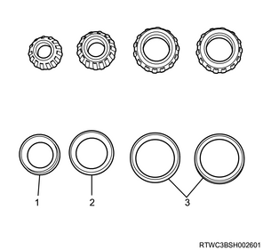
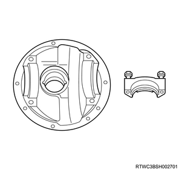
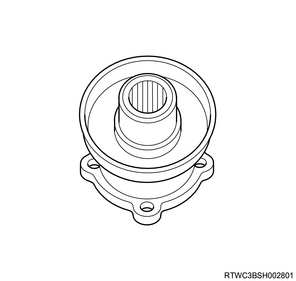
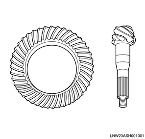

Inspect the bearing for seizure, peeling, noise, etc.
If an abnormality is found, replace it.

Inner bearing
Outer bearing
Side bearing
2. Differential carrier
inspection
1. Inspect the differential carrier.
Note
Inspect the axle case installation section, the side bearing installation section, the bearing cap, and the pinion bearing race and oil seal fitting sections on the carrier assembly for cracking, damage, and wear.

3. Flange
inspection
1. Inspect the flange.
Note
Inspect the oil seal contacting section and spline section of the flange for worn, and the installation section for cracks and damage.

4. Drive pinion
inspection
1. Inspect the drive pinion gear.
Note
Inspect the drive pinion gear contact surfaces including both the drive and coast sides for chipping, cracking, peeling, pitting, and improper tooth contacts.
Inspect the spline section of the drive pinion gear for cracking, twisting and damage.
Caution
For the final gear, even when only the differential ring gear or the drive pinion gear is defective, both of them must be replaced as a set.

5. Ring gear
inspection
1. Inspect the ring gear.
Note
Inspect the ring gear contact surfaces including both the drive and coast sides for chipping, cracking, peeling, pitting, and improper tooth contact.
Caution
For the final gear, even when only the differential ring gear or the drive pinion gear is defective, both of them must be replaced as a set.
Copyright ISUZU MOTORS LIMITED. All rights reserved.